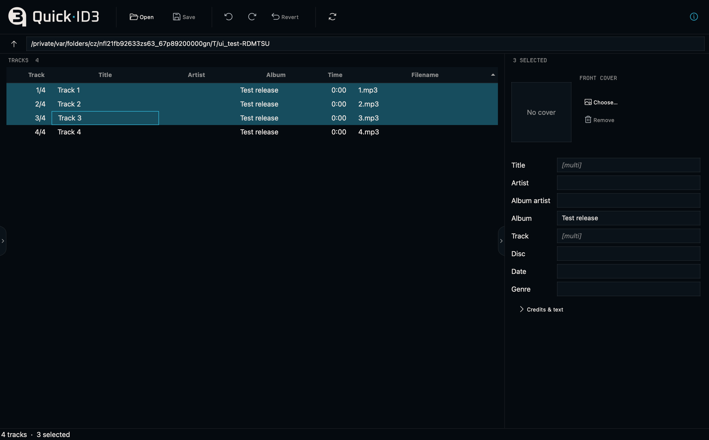

Features
Local MP3 files, native track selection and in-place editing.
THE APPLICATION
Tracks, tags
& artwork.
Browse a local folder. Select one track or several, inspect common and mixed values, and change only the fields you intend to edit.

EDITING
Metadata &
release details.
A local editor for preparing an album, without importing a music library.
- Track metadata
- Edit titles, artists, album artist, album, track and disc numbers, date and genre. Edit Track, Title, Artist and Album directly in the track list.
- Artwork & credits
- Add or replace the front cover. Edit composer, copyright, ISRC, comments and lyrics.
- Selection & layout
- Inspect one track or a selected set. Resize or collapse the side panels, and enable tooltips when you want field definitions.
- Undo & Save
- Undo unsaved edits or revert them. Save changes to the original files without re-encoding the audio.